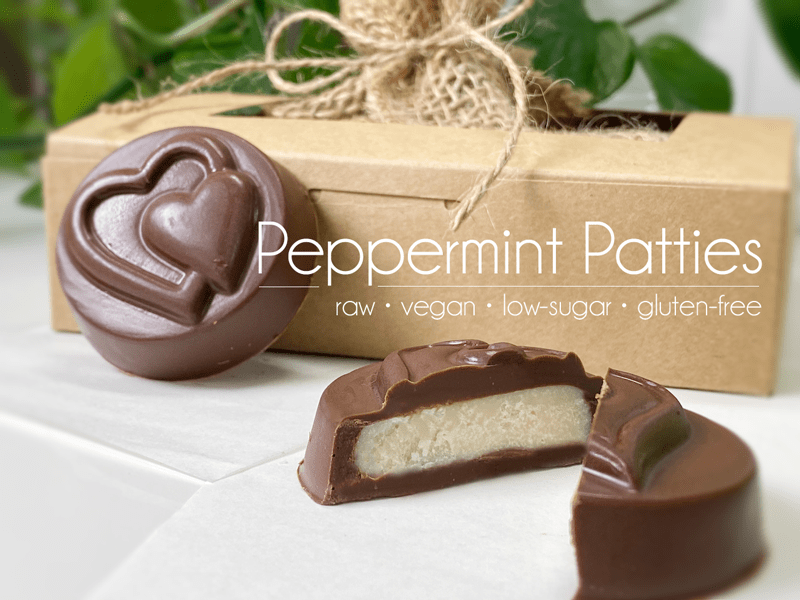
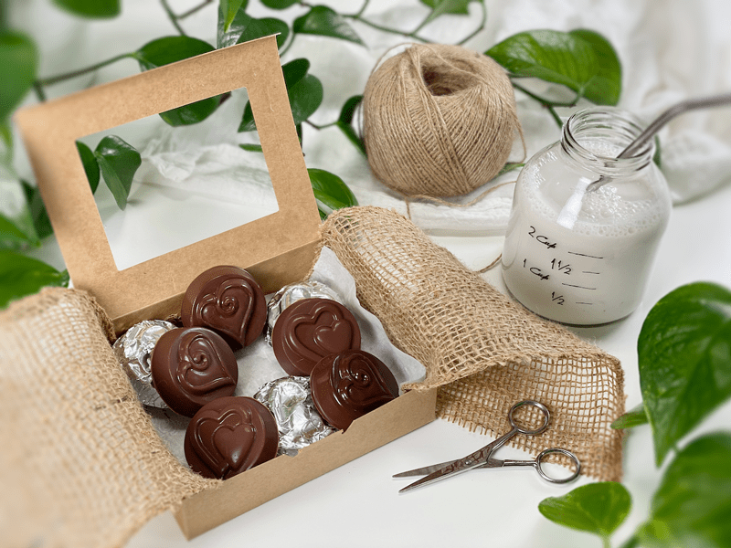
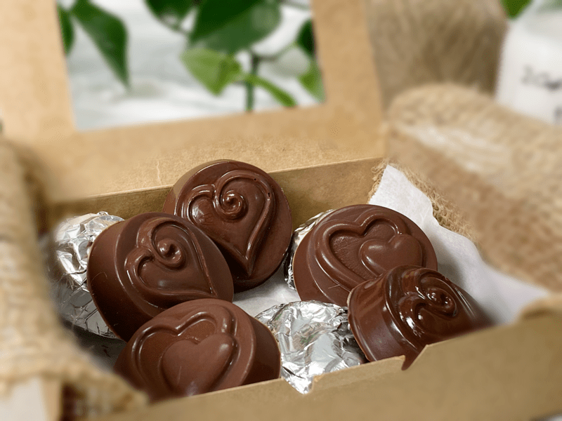
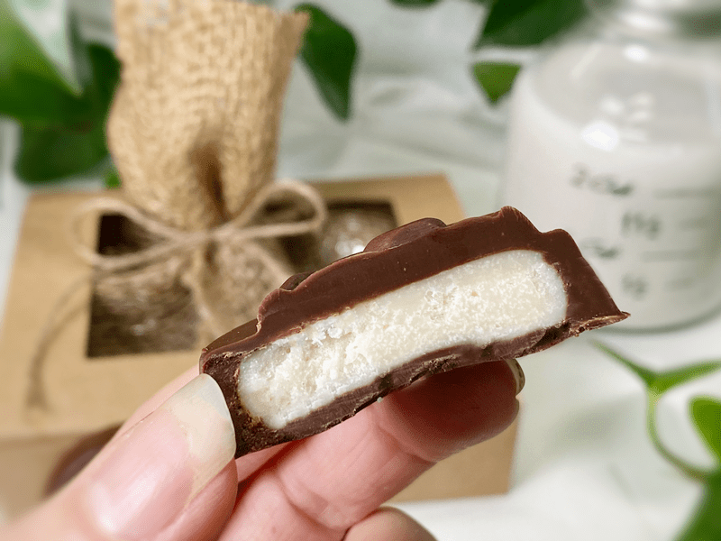
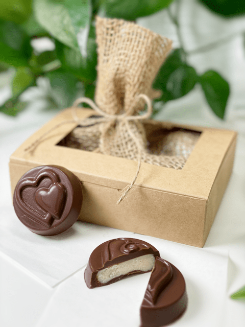

Peppermint Patties | Valentine Day Gift Idea
The base for these vegan, gluten-free, LOW-SUGAR peppermint patties is coconut butter. It’s perfect because it’s rich, packed with fiber, and achieves a creamy consistency when softened, giving it that creamy peppermint patty center that many of us grew up on. You won’t believe just how quick and easy these are to make!

You may think that I created this recipe just in time for Valentine’s Day. I could let you believe that, but in truth, I made these just in time for Bob’s birthday. After all the years we have been together and after the thousands of recipes that I have made (and he has taste-tested) he STILL gets excited about the food I put down before him. So, it’s no surprise that when a special occasion rolls around, like his birthday, I still get giddy with all the ideas of what I can make for him.

Traditional York Peppermint Patties are made from sugar, corn syrup, semi-sweet chocolate (chocolate, sugar, cocoa, milk fat, cocoa butter, soy lecithin, PGPR, emulsifier, vanillin, artificial flavor), invert sugar, egg whites, oil of peppermint, and milk. The ones that you are going to create today are made from coconut butter, very little maple syrup, peppermint extract or oil, and whatever chocolate coating you decide on.

What Is Coconut Butter?
Coconut butter is made from whole coconut flesh (not just the oil) and puréed into a rich and thick spread. It melts in your mouth with a full coconut taste and aroma. The melting point for coconut butter is between 93-100 degrees (F), which makes it great for this recipe, since it can handle being left out at room temp (providing your home isn’t above 93 degrees (F). Not all brands are made equal, so check to make sure that it is raw (if that is important to you) and be sure to scan over the ingredient list to make sure the manufacturer didn’t slip in other unnecessary ingredients.
How to Soften the Coconut Butter
I am going to share two different methods with which you can soften the coconut butter. If you are new to using this ingredient, the first thing you will spot upon opening the jar is a thick layer of coconut oil sitting on top. Do not be alarmed – this is not mold. The oil has separated from the meaty flesh.
- Water Bath Method — place the sealed jar in hot water for 5-10 minutes until it’s melted and you’re able to stir it. Make sure that you stir it really well before using it.
- Dehydrator Method – if you have a box-style dehydrator, you can slip the whole jar into the cavity and warm it until you can stir the contents. This is the method I use.

What You Can Expect From These Candies
I don’t mind recipes that require refrigeration or freezing in order to keep their shape, but my goal is to always try to make them shelf-stable. Bob loves to take snacks on the go, and I don’t want them melting in his pocket. Today, I achieved that. These candies won’t melt (unless subjected to the sun or high heat). They can be stored in the fridge or freezer if you want to ration them, but your teeth will be met with some resistance when you bite down. I guess it just depends on what experience you are after.
The Flavor
Now, it’s quite possible that some of you have never experienced a York Peppermint Patty before, or if you have, you may not have experienced a homemade one. These peppermint patties have the cooling sensation that you can expect when using peppermint extract or peppermint essential oil (which is what I used). You know, that sensation of itty bitty snowmen running up and down your spine?!
Believe it or not, but I only used 1 tablespoon of maple syrup for the whole creamy center. Of course, there is more sugar once you add the chocolate coating. Speaking of which, you can use your favorite go-to chocolate coating, use the one I have linked below (all raw/vegan), or you can melt store-bought chocolate chips.
- Hardening Chocolate – raw cacao butter, cacao powder, maple syrup, and salt.
- Candy Coating Chocolate – raw cacao butter, cacao powder, maple syrup, lecithin, vanilla, and salt.
- Milk Chocolate – raw cacao butter, coconut sugar, vanilla protein powder, cashew, salt, and cacao powder.
Chocolate Mold / Shapes
Be creative! You can use a chocolate candy mold (any shape or style) or you can shape them by hand and simply dip them into the melted chocolate. I used a mold that I picked up many years ago at Michael’s Craft Store, which made 10 candies. The smaller the mold or shape, the more candies it will make. My only word of caution is that you don’t make the candies TOO big, because they are very rich, and a small piece is satisfying.
I hope you enjoy these peppermint candies as much as we have. Please leave a comment below, but most of all… have a blessed and happy day, amie sue

Ingredients
Yields 10 candies (size depending)
Peppermint Centers
- 1/2 cup melted coconut butter
- 1 Tbsp maple syrup
- 3 drops essential peppermint oil or 1/4 tsp peppermint extract (to taste)
- pinch sea salt
Chocolate Coating
- 1 1/2 cups chocolate chips, melted OR
- Raw hardening chocolate (see above for options)
Preparation
Peppermint Centers
- Melt the coconut butter.
- I did this by placing 1/2 cup worth of coconut butter in a 1 cup stainless steel measuring cup and sliding it into the dehydrator, warming it until it was in more of a liquid state.
- I shared up above two other techniques, if you are interested.
- In that same measuring cup, add the maple syrup, peppermint, and pinch of salt. Stir until combined.
- It will thicken due to the temperature difference between the warmed coconut butter and maple syrup. This is what we want.
- Never measure the peppermint over the mixing bowl, because if too much peppermint escapes, you can’t remove it, and trust me, there is such a thing as too much mint.
- Measure out 1 teaspoon of peppermint batter, gently roll into a ball, and slightly flatten in the palm of your hand. Repeat until all the batter is used up. Set aside.
Chocolate Coating
- You can either melt chocolate chips or make the raw hardening chocolate. Either way, it needs to be pourable so you can coat the peppermint centers.
- If the chocolate starts to firm up too much, slide the bowl of chocolate into the dehydrator to soften it.
- You can either dip the peppermint centers in the chocolate, or you can use a chocolate mold, which is what I did.
- If you use a chocolate mold, add enough chocolate to cover the bottom of the mold, and slide it into the fridge to set up (roughly 5-10 minutes). Once the chocolate has set, place the peppermint coin center, then add enough chocolate to cover the sides and base.
- Slide back into the fridge to set.
- Store in an air-tight container for up to 5+ days, or place them in the fridge or freezer to extend your temptations. For gift-giving, I wrapped each one in silver candy wrapping that I picked up at the craft store.
© AmieSue.com